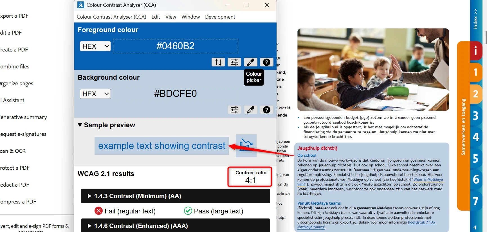
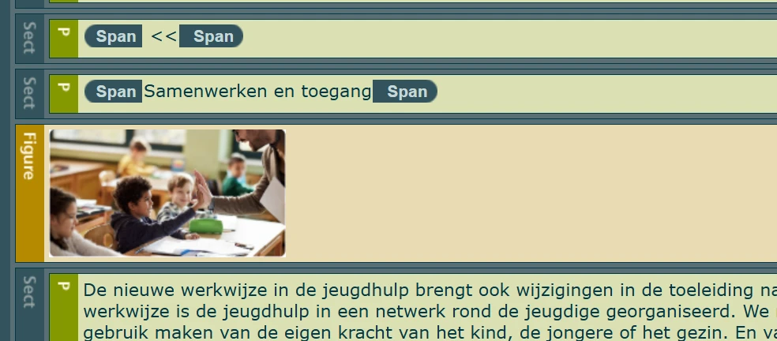
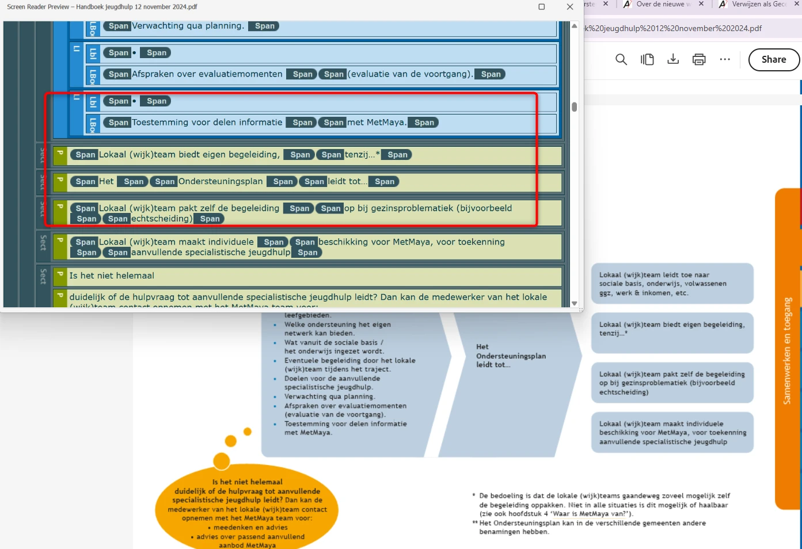
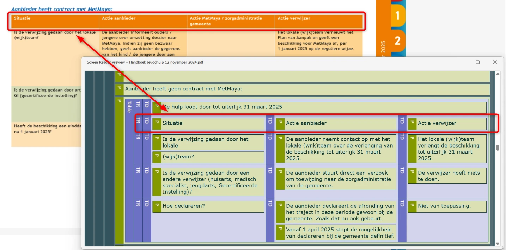

Audit digitale toegankelijkheid van website hulpenondersteuningregioamersfoort.nl
Samenvatting
Wij hebben de website hulpenondersteuningregioamersfoort.nl onderzocht tussen 28 april en 12 mei 2026. Op dit moment is een deel van de succescriteria als voldoende beoordeeld. In dit rapport lees je welke punten nog verbetering behoeven en hoe deze kunnen worden aangepakt.
Onderaan deze pagina staan vier links, bijvoorbeeld "Over de nieuwe werkwijze (algemeen)". De tekst van de links verandert van zwart naar oranje (#FF8000) zodra ze toetsenbordfocus krijgen of de muis erover beweegt. De contrastverhouding is dan 2,5:1.
Tekst van informatieve elementen moet altijd voldoende contrast hebben, ook wanneer het element toetsenbordfocus krijgt of de muis erover beweegt (hover).
User story
Als bezoeker met een visuele beperking, leeftijdsgebonden contrastverlies of een toetsenbord-gebruiker heb ik nodig dat de tekst van elke link of knop in elke staat minimaal 4,5:1 contrast houdt met de achtergrond (3:1 voor grote tekst) — ook bij hover en toetsenbordfocus. Nu verandert de kleur juist in de hover- of focusstaat naar een kleur met te weinig contrast: het element dat ik wil aanklikken wordt het moeilijkst leesbaar, en ik raak het spoor bijster van wat ik aan het doen ben.
Oplossing:
Zorg dat de links minimaal een contrast van 3,0/4,5:1 hebben met de achtergrond, ook bij focus en hover.
Wanneer deze pagina wordt bekeken op een schermresolutie van 1280 bij 1024 pixels en wordt ingezoomd tot 200%, valt de tekst "Hulp en Ondersteuning regio Amersfoort" deels weg achter de Readspeaker-tool.
Inzoomen tot 200% mag de leesbaarheid van informatieve elementen niet aantasten.
Hetzelfde probleem doet zich voor bij een zoom van 400%.
User story
Als bezoeker met een visuele beperking zoom ik in tot 200% of 400% op een scherm van 1280 bij 1024 pixels. Ik wil alle tekst kunnen zien, niet verstopt achter andere elementen. Anders verbergt het inzoomen juist de tekst die ik wilde lezen.
Oplossing:
Zorg dat alles nog werkt en leesbaar is als een bezoeker inzoomt tot 200% of 400% op een scherm van 1280 bij 1024 pixels.
Op deze pagina staan in-paginanavigatielinks "Cookies" en "Privacy". De witte (`#FAFAFA`) tekst staat op een oranje (`#FF8000`) achtergrond met een contrast van 2,4:1.
Als bezoeker met een visuele beperking of als ik op een scherm in fel omgevingslicht kijk, heb ik nodig dat de tekst van elke link minimaal 4,5:1 contrast met de achtergrond houdt (3:1 voor grote tekst van minimaal 18pt of 14pt bold). Nu zijn de links al in de standaardstaat moeilijk leesbaar en moet ik moeite doen om te zien waar ze heen gaan.
Oplossing:
Pas de kleur van de linktekst of de achtergrondkleur aan, zodat de contrastverhouding voldoet aan de minimumeis: 4,5:1 voor normale tekst en 3,0:1 voor grote tekst (minimaal 18pt of 14pt bold). Zorg dat het contrast in alle linkstaten voldoende is (standaard, hover, focus, visited).
Als bezoeker met een visuele beperking heb ik nodig dat ook koppen voldoende contrast hebben met de achtergrond (minimaal 4,5:1 voor normale tekst en 3:1 voor grote tekst). Een kop hoort de structuur van een pagina te verduidelijken; als ik die niet kan lezen, mis ik het kader waarin de inhoud eronder valt.
Oplossing:
Zorg dat normale tekst minimaal 4,5:1 en grote tekst minimaal 3:1 contrast heeft met de achtergrond.
Dit PDF-document heeft geen titel in de documenteigenschappen.
User story
Als bezoeker die PDF's met een schermlezer leest, meerdere PDF-vensters open heeft staan of recente bestanden doorloopt, heb ik nodig dat elk PDF-document een echte documenttitel heeft in de bestandseigenschappen — niet alleen een kop op pagina 1. PDF-lezers (Adobe, browser-viewers) tonen die titel in de titelbalk en lezen die voor. Zonder titel toont de titelbalk alleen de bestandsnaam (bijv. document123.pdf), leest mijn schermlezer een nietszeggende bestandsnaam voor en weet ik niet welk document ik zojuist heb geopend.
Oplossing:
Los het op in Adobe Acrobat:
Open het PDF-document in Adobe Acrobat.
Ga naar Bestand > Eigenschappen.
Ga naar het tabblad Beschrijving.
Vul in het veld Titel een beschrijvende titel in, bijvoorbeeld: "Handboek aanvullende specialistische jeugdhulp in de regio Amersfoort".
Klik op OK en sla het bestand op.
#6 - PDF-document heeft veel contrastproblemen
Impact: MediumType: ContentWCAG: 1.4.3EN: 9.1.4.3

Dit PDF-document bevat veel contrastproblemen. Een paar voorbeelden — dit is geen uitputtende lijst:
Op pagina 1 staat de tekst "Handboek aanvullende specialistische jeugdhulp in de regio Amersfoort" in wit op een oranje (#F7A600) achtergrond, contrast 2:1.
Op pagina 2 staan de teksten "Samenwerken en toegang 1" en "Overgang van 2024 naar 2025 2" in wit op oranje (#F7A943), contrast 2:1.
Op pagina 4 staat oranje (#F7A600) tekst "Samenwerken en toegang" op een witte achtergrond, contrast 2:1, en donkerblauwe (#0460B2) teksten zoals "Op school" op een lichtblauwe (#BDCFE0) achtergrond, contrast 4:1. Vergelijkbare problemen staan op andere pagina's.
User story
Als bezoeker die PDF's leest met een visuele beperking, leeftijdsgebonden contrastverlies of op een scherm in fel zonlicht, heb ik nodig dat alle tekst in het document — zowel normaal als groot — voldoet aan de vereiste contrastverhoudingen (minimaal 4,5:1 voor normale tekst en 3:1 voor grote tekst), zodat ik de inhoud zonder inspanning kan lezen en het document goed kan gebruiken.
Oplossing:
Zorg dat alle tekst in de PDF voldoet aan de vereiste contrastverhoudingen: minimaal 4,5:1 voor normale tekst en 3:1 voor grote tekst. Pas de combinaties van tekst- en achtergrondkleur aan waar nodig en controleer het contrast met betrouwbare tools.
#7 - Koppen zijn niet als kop gemarkeerd
Impact: MediumType: ContentWCAG: 1.3.1EN: 9.1.3.1
In dit PDF-document zijn de koppen niet als kop gemarkeerd. Zie bijvoorbeeld "Handboek aanvullende specialistische jeugdhulp in de regio Amersfoort" op pagina 1, "Inleiding - Nieuwe werkwijze jeugdhulp in de regio Amersfoort" en "Aanvullende specialistische jeugdhulp per 1 januari 2024" op pagina 3, en veel andere.
Hierdoor verschilt de visuele informatiestructuur van de documentstructuur in de tags.
User story
Als bezoeker die door PDF's navigeert door met een schermlezer van kop naar kop te springen, heb ik nodig dat elke tekst die er als een kop uitziet ook als echte kop (H1-H6) wordt getagd, in plaats van als een paragraaf (P) die groter is gestyled. De koppensneltoets van mijn schermlezer vindt alleen echte kop-tags, en een tekst die als kop is gestyled zonder de juiste tag is voor mij onzichtbaar als ik het document wil scannen.
Oplossing:
Vervang de P-tag door de H1- tot en met H6-tag, zodat de documentstructuur in de tags overeenkomt met wat visueel in het document wordt getoond.
#8 - Inhoudsopgave mist Reference-tags
Impact: MediumType: ContentWCAG: 1.3.1EN: 9.1.3.1
Dit PDF-document bevat een inhoudsopgave op pagina 2. De links naar de pagina's gebruiken echter geen Reference-tag.
Schermlezers gebruiken deze tags om de documentstructuur correct te interpreteren. Voor een goed werkende inhoudsopgave zijn de volgende tags nodig: TOC, TOCI, Reference en Link.
User story
Als bezoeker die met een schermlezer door PDF's navigeert, heb ik nodig dat elk item in de inhoudsopgave getagd is met de juiste TOC-, TOCI-, Reference- en Link-tags. Met deze tags herkent mijn schermlezer de inhoudsopgave als een navigatie-instrument, kondigt die ook zo aan en kan ik vanuit elk item direct naar de juiste pagina springen. Zonder die tags is de inhoudsopgave slechts een lijst met titels zonder navigatie eronder.
Oplossing:
Voeg de juiste tags toe voor de onderdelen van de inhoudsopgave.
#9 - Decoratieve afbeeldingen zijn toegevoegd met figure-tags
Impact: MediumType: ContentWCAG: 1.1.1EN: 9.1.1.1

Op pagina's 4, 5, 9, 13 en andere van dit PDF-document staan decoratieve afbeeldingen die ten onrechte zijn getagd als Figure zonder beschrijving. De Figure-tag is bedoeld voor informatieve afbeeldingen en vereist een beschrijving.
User story
Als bezoeker die de PDF leest met een schermlezer of een andere assistieve technologie, heb ik nodig dat elke puur decoratieve afbeelding wordt getagd als artefact in plaats van als Figure. Zolang een decoratie als Figure is gemarkeerd, stopt mijn schermlezer om die aan te kondigen (en klaagt over de ontbrekende beschrijving), wordt mijn leesritme onderbroken door betekenisloze inhoud, en kan ik niet meer onderscheiden welke afbeeldingen op de pagina daadwerkelijk informatie bevatten.
Oplossing:
Markeer deze decoratieve afbeeldingen als artefact, zodat schermlezers ze niet proberen te interpreteren.
#10 - Informatieve afbeeldingen zijn als achtergrondafbeelding toegevoegd
Impact: MediumType: ContentWCAG: 1.1.1EN: 9.1.1.1
Pagina 1 van dit PDF-document bevat twee logo's die als artefact zijn gemarkeerd. Afbeeldingen die als artefact zijn gemarkeerd, zijn niet toegankelijk voor schermlezers, waardoor de informatie erin niet beschikbaar is voor blinde en slechtziende bezoekers.
User story
Als bezoeker die de PDF leest met een schermlezer, heb ik nodig dat elk logo op de omslag wordt getagd als Figure met een tekstbeschrijving — en niet wordt toegevoegd als achtergrondartefact dat voor assistieve technologie verborgen blijft. Zolang het logo als artefact bestaat, kan mijn schermlezer het niet aankondigen, kan ik niet zien welke organisatie het document heeft uitgegeven, en blijft het belangrijkste merksignaal in het bestand onzichtbaar voor mij.
Oplossing:
Als de logo's bedoeld zijn als informatief, tag ze dan als Figure en voorzie ze van een beschrijvend tekstalternatief.
#11 - Niet alle lijstitems zijn correct gemarkeerd
Impact: MediumType: ContentWCAG: 1.3.1EN: 9.1.3.1
In dit PDF-document staat op pagina 6 een lijst van 8 items. In de tags staan echter twee lijsten met 3 en 5 items. Het aantal lijstitems in de tag-structuur moet overeenkomen met het aantal zichtbare lijstitems.
Een vergelijkbaar probleem doet zich voor in de lijsten op pagina's 15, 16 en 18.
User story
Als bezoeker die met een schermlezer PDF's leest, heb ik nodig dat het aantal lijstitems in de tagstructuur overeenkomt met het aantal items dat ik op de pagina zie. Mijn schermlezer kondigt "lijst van N items" aan op basis van de tags, niet op basis van wat zichtbaar is. Wanneer dat niet klopt, verwacht ik items die niet komen of hoor ik over items die niet op de pagina staan, en verlies ik vertrouwen in de hele lijst.
Oplossing:
Zorg dat de lijst correct is opgemaakt met L- en LI-tags, en dat het aantal lijstitems overeenkomt met wat zichtbaar is.
#12 - Leesvolgorde van de tags is niet logisch
Impact: MediumType: ContentWCAG: 1.3.2EN: 9.1.3.2

Op enkele pagina's van dit PDF-document is de leesvolgorde niet logisch. Op pagina 6 staat de tekst "Het Ondersteuningsplan leidt tot…" visueel na "Toestemming voor delen informatie met MetMaya", maar in de taglaag staat die juist na "Lokaal (wijk)team leidt toe naar sociale basis, onderwijs, volwassenen ggz, werk & inkomen, etc.". Vergelijkbare volgordeproblemen staan op pagina 7, met de tabel op pagina 10 (die in de taglaag is geplaatst na alle andere tabellen, vóór "Contact en informatie"), en op pagina's 14, 16, 17 en andere.
Schermlezers lezen een PDF-document in de volgorde van de tags in de codelaag. Als die tags niet logisch geordend zijn, is de leesvolgorde dat ook niet en wordt het voor een blinde bezoeker moeilijk om de inhoud van het document te begrijpen.
User story
Als bezoeker die de PDF leest met een schermlezer, met het toetsenbord door het document navigeert, of de pagina laat reflowen in een assistieve viewer, heb ik nodig dat de volgorde van de tags in de codelaag overeenkomt met de visuele leesvolgorde. De schermlezer loopt de tagboom van boven naar beneden door, en wanneer de tags niet in volgorde staan, hoor ik zinnen in de verkeerde volgorde, onderbreken alinea's elkaar halverwege een gedachte, en kan ik het document niet volgen zoals een ziende lezer dat zou doen.
Oplossing:
Zorg dat de volgorde van de tags logisch is en overeenkomt met de visuele weergave.
#13 - Tabelkoppen zijn niet gemarkeerd
Impact: MediumType: ContentWCAG: 1.3.1EN: 9.1.3.1

In dit PDF-document is de tabel onder de kop "Aanbieder heeft contract met MetMaya:" op pagina 10 een datatabel. De juiste markering ontbreekt. Hetzelfde probleem staat op pagina's 11, 12 en 13.
Bij een datatabel zijn speciale tags nodig om de schermlezer te laten weten dat er een tabelkop is en dat die kop een relatie heeft met de onderliggende datacellen.
User story
Als bezoeker die PDF-tabellen met een schermlezer leest, heb ik nodig dat elke kopcel in een datatabel als TH wordt getagd en elke datacel als TD. Mijn schermlezer gebruikt de TH-cellen om de kolom- of rijkop aan te kondigen vóór elke waarde terwijl ik door de tabel beweeg. Zonder die tags lees ik alleen losse getallen voor, zonder labels, zonder relaties en zonder betekenis.
Oplossing:
Markeer de cellen in de koprij van de tabel met TH-tags en de datacellen met TD-tags.
#14 - Informatieve afbeeldingen met figure-tag hebben geen tekstalternatief
Dit PDF-document bevat informatieve afbeeldingen zonder tekstalternatief (alt-tekst). Zie pagina's 14, 17 en 19.
Afbeeldingen die als Figure zijn getagd moeten altijd een beschrijving (alt-tekst) hebben. Deze tag is gereserveerd voor informatieve afbeeldingen. Zonder alt-tekst kunnen schermlezers de inhoud van de afbeelding niet doorgeven aan de gebruiker. Op dit moment wordt alleen "afbeelding" voorgelezen, waardoor slechtziende bezoekers mogelijk denken dat ze belangrijke informatie missen.
Daarnaast geldt dat als tekst onderdeel is van een afbeelding (bijvoorbeeld op pagina 17), die zoveel mogelijk vervangen moet worden door echte tekst op de pagina, in plaats van te worden ingebed in de afbeelding.
User story
Als bezoeker die een schermlezer gebruikt heb ik beschrijvingen van afbeeldingen nodig. Elke informatieve Figure moet een geschreven beschrijving hebben. Anders hoor ik alleen "afbeelding" en mis ik de inhoud.
Oplossing:
Voeg een tekstalternatief toe aan deze informatieve afbeeldingen.
Over dit onderzoek
Leeswijzer
Onze rapporten zijn anders. Bij het bespreken van de gevonden problemen volgen wij niet de structuur van de norm, maar die van jouw website of app. Hierdoor kun je gewoon per pagina of scherm aan de slag gaan. Wel zo makkelijk! Je vindt verderop een overzicht van alle pagina’s met problemen.
We geven je bij elk gevonden issue een paar voorbeelden, maar niet een complete lijst. Controleer zelf of het probleem ook nog op andere plekken voorkomt. Zie het rapport als een leidraad.
Gebruikte norm
Dit onderzoek laat zien in hoeverre de website op dit moment voldoet aan WCAG 2.2, niveau A en AA. WCAG staat voor Web Content Accessibility Guidelines. Dit is de internationale norm voor digitale toegankelijkheid. De Europese norm EN 301 549 bevat alle eisen van WCAG op niveau A en AA.
In dit rapport hebben we korte beschrijvingen van de succescriteria uit de norm opgenomen, met een algemene uitleg erbij. Wil je ze helemaal lezen? Bekijk dan de documentatie van WCAG.
Gebruikte onderzoeksmethode
We gebruiken de onderzoeksmethode WCAG-EM van het W3C. Het proces ziet er als volgt uit:
vaststellen wat binnen en buiten scope valt
vaststellen welke technologieën zijn gebruikt
steekproef (sample) samenstellen
steekproef onderzoeken
gevonden issues beschrijven
Het grootste deel van het onderzoek doen we met de hand. Voor een deel van de toegankelijkheidseisen gebruiken we automatische tools als ondersteuning, zoals axe-core en Chrome Developer Tools.
Belangrijk om te weten
Dit rapport helpt je om de toegankelijkheid van je website te verbeteren. Maar let op: het is geen definitieve, volledige lijst van alle aanwezige toegankelijkheidsproblemen. Dat zit zo:
Het is een steekproef
Ten eerste is het onderzoek gebaseerd op een steekproef. Die is op een betrouwbare manier genomen, en de meeste problemen zullen daardoor zeker aan het licht komen. Toch kan een probleem net buiten de steekproef vallen. Bij een volgend onderzoek kan het wel ontdekt worden.
Op basis van falsificatie
We beoordelen vanuit het principe van falsificatie. Dat houdt in dat we proberen te bewijzen dat iets niet waar is, in plaats van te bevestigen dat het klopt. ‘Voldoet’ betekent daarom dat we geen reden hebben gevonden om een punt af te keuren. Maar als we later wél een reden vinden, kan het alsnog worden afgekeurd.
Voortschrijdend inzicht
Het komt voor dat de beoordeling van een succescriterium op detailniveau verandert. De norm beschrijft namelijk niet élk mogelijk scenario. Samen met andere onderzoeksbureaus overleggen we hoe we met bepaalde situaties omgaan. Zo kan iets dat nu wordt afgekeurd, soms bij een volgend onderzoek worden goedgekeurd en andersom.
Oplossen leidt tot nieuw probleem
Ten slotte kan het gebeuren dat bij het oplossen van een probleem onbedoeld een nieuw toegankelijkheidsprobleem ontstaat. Dat komt dan bij een volgend onderzoek pas naar voren.
Hoe werkt dit rapport?
Bevindingen bekijken en filteren
Alle gevonden toegankelijkheidsproblemen staan onder Gevonden problemen. Je kunt de bevindingen filteren op:
Impact (Groot, Medium, Klein, Advies) — hoe ernstig is het probleem voor de gebruiker?
Type (Content, Techniek) — moet de inhoud of de techniek worden aangepast?
Status (Open, Opgelost) — welke problemen zijn al verholpen?
Voortgang bijhouden
Je kunt je voortgang op twee manieren bijhouden:
CSV-export — exporteer alle bevindingen als CSV-bestand en laad het in een (online) spreadsheet om met je team samen te werken.
Jira-export — exporteer alle bevindingen als Jira-compatibel CSV-bestand. Importeer het via Jira > Issues > Import issues from CSV. Bevindingen worden aangemaakt als bugs met prioriteit op basis van impact.
Registreer in de browser — activeer deze optie om per bevinding bij te houden of het is opgelost. Je voortgang wordt opgeslagen in je browser. Niemand anders kan je resultaat zien. Let op: de voortgang is gekoppeld aan je browser. Als je een andere browser of een ander apparaat gebruikt, begint de telling opnieuw.
Plan van aanpak — download een geprioriteerd plan van aanpak om de gevonden problemen stap voor stap op te lossen. Dit is beschikbaar bij audits vanaf maart 2026.
Link naar een specifieke bevinding delen
Bij elke bevinding verschijnt een link-icoon wanneer je er met de muis overheen gaat. Klik op dit icoon om de directe link naar die bevinding te kopiëren. Je kunt deze link plakken in een e-mail of chatbericht, bijvoorbeeld om een vraag te stellen aan Proper Access over een specifiek punt.